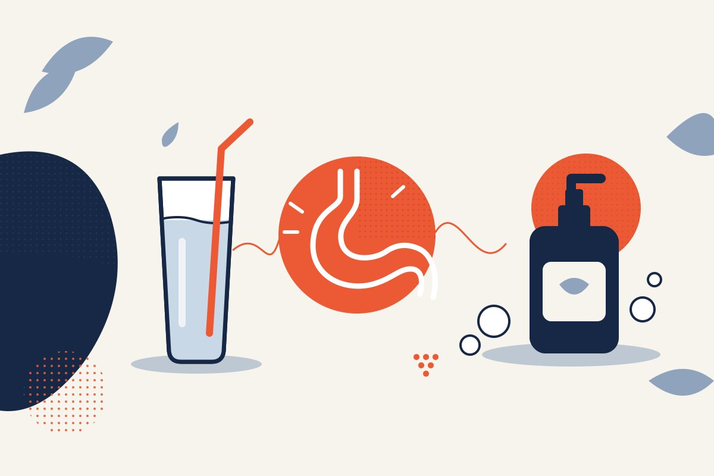

Stomach Flu (Norovirus): How Long It Lasts and What Helps
An adult guide to the stomach flu: how long norovirus lasts and spreads, what to drink and eat, which medicines help, and when to get care.

Key Takeaways
- Norovirus, the most common cause of the stomach flu, usually starts 12 to 48 hours after exposure, and most people get better within 1 to 3 days.[1][4]
- A person with norovirus is most contagious while sick and in the first few days after feeling better, and CDC advises not preparing food or caring for others until 2 days (48 hours) after symptoms stop.[2][3]
- Norovirus has no specific medicine, and antibiotics do not treat it, so stomach flu care centers on replacing fluids.[1]
- Oral rehydration solution is the first-line treatment for mild to moderate dehydration from diarrhea or vomiting in adults, according to the Infectious Diseases Society of America.[6]
- Hand sanitizer does not work well against norovirus, so CDC recommends washing hands with soap and water and cleaning vomit or diarrhea with a chlorine bleach solution.[3]
What is the stomach flu, and is it the same as the flu?
No, the stomach flu is viral gastroenteritis, an inflammation of the stomach or intestines, and influenza viruses do not cause it.[1][4] Norovirus is the most common cause.[4]
CDC calls norovirus the leading cause of vomiting and diarrhea, and of foodborne illness, in the United States.[1] Other viruses can cause the same illness, including rotavirus and adenovirus, which most often infect young children but can also infect adults.[4]
What are the first signs and symptoms of norovirus?
The most common symptoms are diarrhea, vomiting, nausea and stomach pain, and some people also get a fever, headache or body aches.[1] Symptoms usually start 12 to 48 hours after exposure.[1]
The illness can make you feel extremely sick, with vomiting or diarrhea many times a day.[1] In adults, NIDDK lists these signs of dehydration: extreme thirst and dry mouth, urinating less than usual, feeling tired, dark-colored urine, sunken eyes or cheeks, and light-headedness or fainting.[4]
How long does the stomach flu last?
Most people with norovirus get better within 1 to 3 days.[1] Other stomach viruses can last longer: rotavirus symptoms last 3 to 8 days and adenovirus symptoms 1 to 2 weeks.[4]
NIDDK advises adults to see a doctor right away if diarrhea lasts more than 2 days.[4] The labels for loperamide and bismuth subsalicylate also say to stop using them and ask a doctor if diarrhea lasts more than 2 days.[8][9]
How long is the stomach flu contagious?
A person with norovirus is most contagious while sick, especially while vomiting, and during the first few days after feeling better.[2] The virus can still spread for 2 weeks or more after you feel better.[2]
Norovirus can be found in vomit or stool even before you start feeling sick.[3] CDC advises staying home while sick and for 2 days (48 hours) after symptoms stop.[1]
When can you go back to work?
CDC says not to prepare or handle food, or care for others, until at least 2 days (48 hours) after symptoms stop.[3] CDC notes this is especially important for people who work in restaurants, schools, daycares, long-term care facilities and similar places.[3]
How does norovirus spread, and can you catch it in the same room?
Norovirus spreads when tiny particles of an infected person's stool or vomit get into your mouth, through direct contact, contaminated food or water, or contaminated surfaces.[1][2] You can, if someone vomits: tiny drops of vomit from a person with norovirus can spray through the air.[2]
CDC says those drops can land on surfaces or enter another person's mouth, and that only a few virus particles are needed to make someone sick.[2] NIDDK adds that norovirus can live for months on surfaces such as countertops and changing tables.[4]
How do you get rid of the stomach flu?
There is no medicine that cures norovirus, and antibiotics do not help because they fight bacteria, not viruses.[1] Treatment means replacing the fluid you lose while the illness runs its course.[1][6]
The Infectious Diseases Society of America recommends against routine antibiotics for most people with acute watery diarrhea who have not traveled internationally, with possible exceptions for people with a weakened immune system.[6] Its guideline recommends oral rehydration solution as first-line treatment for mild to moderate dehydration, and intravenous fluids when there is severe dehydration, shock, or altered mental status and oral rehydration has failed, or when there is ileus (a stalled gut).[6]
CDC notes that severe dehydration may require a hospital stay for fluids given through a vein.[1]
What should you drink: water, sports drinks or oral rehydration solution?
Oral rehydration solution is the first choice for mild to moderate dehydration.[6] CDC says over-the-counter oral rehydration fluids are most helpful for mild dehydration, while sports drinks and other drinks without caffeine or alcohol can help but may not replace important nutrients and minerals.[1]
The Infectious Diseases Society of America recommends reduced-osmolarity oral rehydration solution as first-line therapy for mild to moderate dehydration in adults, including dehydration from vomiting.[6] It also recommends continuing to replace ongoing losses with oral rehydration solution until the diarrhea and vomiting stop.[6]
For some people, drinks with caffeine and drinks high in simple sugars, such as sweetened beverages and some fruit juices, can make diarrhea worse.[5]
What should you eat with or after the stomach flu?
When your appetite returns, you can most often go back to your normal diet, even if you still have diarrhea; a restricted diet does not help.[5] The Infectious Diseases Society of America recommends going back to a usual diet during or right after rehydration.[6]
NIDDK says research shows a restricted diet does not help treat viral gastroenteritis, and most experts do not recommend fasting.[5] For some people, fatty foods such as fried foods and pizza, caffeine, sugary drinks, and milk products can make diarrhea worse.[5]
Some people have trouble digesting lactose, the sugar in milk, for up to a month or more after the illness.[5]
Can you take Imodium, Pepto-Bismol or Zofran for the stomach flu?
Sometimes, but none of them replaces fluids. The Infectious Diseases Society of America says medicines that slow the gut, such as loperamide, and antinausea medicines can be considered once a person is adequately hydrated, and that they are not a substitute for fluid and electrolyte replacement.[6]
| Medicine | What the guideline or label says | Do not use, or ask first |
|---|---|---|
| Loperamide (Imodium A-D) | May be given to adults with a healthy immune system who have acute watery diarrhea (weak recommendation)[6] | Do not use with bloody or black stool; ask a doctor first if you have a fever or mucus in the stool; taking more than directed can cause serious heart problems or death[8] |
| Bismuth subsalicylate (Pepto-Bismol) | Labeled to relieve diarrhea, and upset stomach from overindulgence, including nausea[9] | Contains salicylate: do not take if allergic to salicylates, including aspirin; do not use with an ulcer, a bleeding problem, or bloody or black stool[9] |
| Ondansetron (Zofran) | A prescription medicine FDA-labeled to prevent nausea and vomiting from cancer treatment and surgery, so use for the stomach flu is off-label[10] | Can affect heart rhythm; the label recommends ECG monitoring in people with low potassium or magnesium[10] |
Loperamide
The guideline says loperamide should be avoided at any age in suspected or proven inflammatory diarrhea or diarrhea with fever, where it may lead to toxic megacolon (strong recommendation).[6] The Drug Facts label says to stop and ask a doctor if symptoms get worse, diarrhea lasts more than 2 days, or the belly swells or bulges.[8]
Bismuth subsalicylate
The label warns that children and teenagers who have or are recovering from chicken pox or flu-like symptoms should not use it, because of the risk of Reye's syndrome.[9] Ask a doctor or pharmacist first if you take medicine for blood thinning, diabetes, gout or arthritis.[9] A temporary, harmless darkening of the stool or tongue can occur.[9]
Ondansetron
Ondansetron's FDA-approved uses are preventing nausea and vomiting from chemotherapy, radiation and surgery.[10] The Infectious Diseases Society of America says antinausea medicine such as ondansetron may be given to children over 4 and adolescents with vomiting, to help them drink (weak recommendation); for adults, it says antinausea medicine can be considered once hydrated.[6]
The label warns of QT prolongation, a heart rhythm change, and of serotonin syndrome when taken with other serotonergic drugs such as SSRI or SNRI antidepressants.[10] Whether it fits your situation is a clinician's decision.
Do probiotics help the stomach flu?
Probably not much. A 2020 Cochrane review found that probiotics probably make little or no difference to the number of people whose diarrhea lasts 48 hours or longer.[7]
That review included 11,526 children and only 412 adults, so the adult evidence is thin.[7] The 2017 Infectious Diseases Society of America guideline gave probiotics only a weak recommendation, saying they may be offered to reduce symptom severity and duration in adults and children with a healthy immune system.[6]
Does hand sanitizer or bleach kill norovirus?
Hand sanitizer does not work well against norovirus; wash with soap and water for at least 20 seconds instead.[3] For surfaces, CDC recommends a chlorine bleach solution or an EPA-registered disinfectant labeled for norovirus.[3]
CDC's bleach solution is 1,000 to 5,000 ppm, which is 5 to 25 tablespoons of household bleach (5% to 8%) per gallon of water, left on the area for at least 5 minutes.[3] Wear rubber or disposable gloves, wipe up the whole area first, then disinfect and clean again with soap and hot water.[3]
Laundry and food
Remove soiled clothes or linens right away, handle them without shaking, wash them in hot water at the longest cycle, and machine dry on the highest heat.[3] Noroviruses can survive temperatures as high as 145°F, and quick steaming does not heat food enough to kill them.[3]
Can you get norovirus twice?
Yes. There are many types of norovirus, and infection with one type may not protect you against others, so you can get it many times in your life.[1]
Some protection against specific types can develop, but CDC says it is not known exactly how long it lasts.[1]
Stomach flu vs food poisoning: what is the difference?
The two overlap. Gastroenteritis caused by contaminated food or drink, whether from viruses, bacteria, parasites or chemicals, is called food poisoning, and norovirus is a common cause of both.[1][4]
The Infectious Diseases Society of America links vomiting with nonbloody diarrhea that lasts 2 to 3 days or less to norovirus.[6] When diarrhea comes with fever, bloody or mucus-filled stools, severe cramping or signs of sepsis, the guideline recommends stool testing for bacterial causes.[6] For bacterial causes and testing, see the food poisoning treatment guide.
When should you go to the ER or see a doctor for the stomach flu?
See a doctor right away for signs of dehydration, a change in mental state, a high fever, frequent vomiting, six or more loose stools in a day, diarrhea lasting more than 2 days, severe pain in the abdomen or rectum, or stools that are black and tarry or contain blood or pus.[4]
When to see a doctor
Adults who cannot drink enough liquids or oral rehydration solution to prevent dehydration, or who do not improve after drinking it, need to see a doctor.[4] A person with severe dehydration may need treatment at a hospital, including fluids given through a vein.[1][4]
Who should see a doctor for any symptoms
Older adults, pregnant women, and adults with a weakened immune system or another health condition should see a doctor right away for any symptoms of viral gastroenteritis.[4] CDC notes that older adults and people with weakened immune systems are more likely to develop severe infections.[1]
What a video visit can and cannot cover
NIDDK says adults with signs of dehydration, severe pain in the abdomen or rectum, or stools that contain blood should see a doctor right away, and a person with severe dehydration may need treatment at a hospital.[4]
A video visit can review how long symptoms have lasted, how much you are drinking and urinating, warning signs and your current medicines. It cannot examine your abdomen, run blood or stool tests, or give intravenous fluids, so TeleDirectMD directs anyone with severe dehydration, blood in the stool or severe abdominal pain to in-person care.
This guide is for adults 18 and older. Infants and children with the stomach flu need a doctor's advice early, because diarrhea can lead to severe dehydration in newborns and infants in just a day or two.[4]
Frequently Asked Questions
Yes. Norovirus can be found in vomit or stool even before you start feeling sick.[3]
Symptoms of norovirus usually start 12 to 48 hours after exposure.[1]
No. Antibiotics do not help treat norovirus because they fight bacteria, not viruses.[1]
When your appetite returns, you can most often go back to your normal diet, even if you still have diarrhea. A restricted diet does not help treat viral gastroenteritis.[5]
Sports drinks can help with mild dehydration but may not replace important nutrients and minerals. Over-the-counter oral rehydration fluids are most helpful for mild dehydration.[1]
Video visits with a board-certified physician for stomach flu questions are available through TeleDirectMD. TeleDirectMD is a telehealth practice. This guide is educational, is not sponsored, and contains no affiliate links.
How to cite this guide
Bhavsar P. Stomach Flu (Norovirus): How Long It Lasts and What Helps. TeleDirectMD Health Guides. Last reviewed November 24, 2026. https://teledirectmd.com/health-guides/stomach-flu-norovirus-guide/
References
- Centers for Disease Control and Prevention. About Norovirus. Updated and reviewed April 24, 2024; accessed November 24, 2026. https://www.cdc.gov/norovirus/about/index.html
- Centers for Disease Control and Prevention. How Norovirus Spreads. Updated and reviewed April 24, 2024; accessed November 24, 2026. https://www.cdc.gov/norovirus/causes/index.html
- Centers for Disease Control and Prevention. How to Prevent Norovirus. Updated and reviewed January 13, 2025; accessed November 24, 2026. https://www.cdc.gov/norovirus/prevention/index.html
- National Institute of Diabetes and Digestive and Kidney Diseases. Symptoms & Causes of Viral Gastroenteritis (“Stomach Flu”). Last reviewed May 2018; accessed November 24, 2026. https://www.niddk.nih.gov/health-information/digestive-diseases/viral-gastroenteritis/symptoms-causes
- National Institute of Diabetes and Digestive and Kidney Diseases. Eating, Diet, & Nutrition for Viral Gastroenteritis (“Stomach Flu”). Last reviewed May 2018; accessed November 24, 2026. https://www.niddk.nih.gov/health-information/digestive-diseases/viral-gastroenteritis/eating-diet-nutrition
- Shane AL, Mody RK, Crump JA, et al. 2017 Infectious Diseases Society of America Clinical Practice Guidelines for the Diagnosis and Management of Infectious Diarrhea. Clinical infectious diseases. 2017;65(12):e45-e80. doi:10.1093/cid/cix669. Practice guideline. https://pubmed.ncbi.nlm.nih.gov/29053792/
- Collinson S, Deans A, Padua-Zamora A, et al. Probiotics for treating acute infectious diarrhoea. The Cochrane database of systematic reviews. 2020;12(12):CD003048. doi:10.1002/14651858.CD003048.pub4. Systematic review and meta-analysis. https://pubmed.ncbi.nlm.nih.gov/33295643/
- DailyMed. IMODIUM A-D (loperamide hydrochloride) tablet, film coated, Drug Facts label. Kenvue Brands LLC. Label updated September 23, 2025; accessed November 24, 2026. https://dailymed.nlm.nih.gov/dailymed/drugInfo.cfm?setid=01da76d0-1979-4c45-9d39-c72ae4e4ffe2
- DailyMed. PEPTO-BISMOL CHERRY (bismuth subsalicylate) suspension, Drug Facts label. The Procter & Gamble Manufacturing Company. Label updated October 5, 2026; accessed November 24, 2026. https://dailymed.nlm.nih.gov/dailymed/drugInfo.cfm?setid=67382f40-edbd-2be6-e053-2a91aa0a6700
- DailyMed. Ondansetron tablet, film coated; ondansetron tablet, orally disintegrating, prescribing information. Glenmark Pharmaceuticals Inc., USA. Revised August 2025; label updated January 8, 2026; accessed November 24, 2026. https://dailymed.nlm.nih.gov/dailymed/drugInfo.cfm?setid=eee5217a-eba8-463a-812d-bf3c66f0934f
Sources checked November 24, 2026. Medicine warnings come only from FDA labels on DailyMed; this guide gives no doses. The 2017 IDSA guideline is the most recent US infectious diarrhea guideline found in this check. NIDDK pages were last reviewed in May 2018 and are used for patient-facing warning signs and diet advice that match current CDC pages. The Cochrane review enrolled mostly children.
This health guides library is published for educational purposes only. It does not constitute medical advice and is not a substitute for evaluation by a licensed clinician. Always consult a qualified healthcare provider about any medical concern. If you are having a medical emergency, call 911. All articles are reviewed by Parth Bhavsar, MD, and cite clinical guidelines, government health agencies and published research.